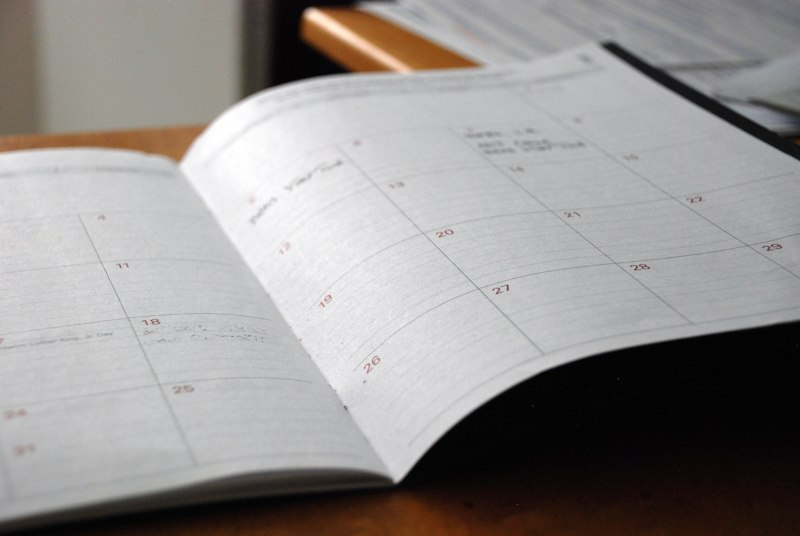

Привітання і знайомство
Рівень A1 · 10 год
Після цієї теми ви зможете познайомитися, представити себе й
підтримати коротку розмову про те, звідки ви і чим
займаєтесь.
Уроки теми:
- Hello, nice to meet you — перші 15 фраз
- Дієслово to be й особисті займенники
- Країни, національності, «звідки ви»
Формати: аудіювання, картки з лексикою, симуляція діалогу.

Числа, час і дата
Рівень A1 · 8 год
Після цієї теми ви домовитеся про зустріч, назвете ціну,
зрозумієте розклад і не загубитеся в датах.
Уроки теми:
- Числівники від 1 до 100
- What time is it? — час і розклад
- Дні тижня, місяці, дати
Формати: інтерактивний тренажер, тест на відповідність,
диктант на слух.
Їжа і покупки
Рівень A1 · 8 год
Після цієї теми ви замовите каву, зробите покупки й
запитаєте ціну — без гуглперекладача в руках.
Уроки теми:
- У кав'ярні: як зробити замовлення
- Продукти та кількість: some, any, a few
- Шопінг, розміри й ціни
Формати: відео з розбором, квіз, рольова ситуація.
Подорожі та транспорт
Рівень A2 · 11 год
Після цієї теми ви пройдете реєстрацію в аеропорту,
заселитесь у готель і запитаєте дорогу в незнайомому місті.
Уроки теми:
- В аеропорту та на вокзалі
- Бронювання готелю листом і телефоном
- Як запитати і зрозуміти дорогу
Формати: інтерактивні ситуації, слухання оголошень,
письмовий лист-бронювання.
Робота і професії
Рівень A2 · 10 год
Після цієї теми ви розкажете про свою роботу, опишете
типовий день і пройдете просту співбесіду англійською.
Уроки теми:
- Професії та обов'язки
- Мій робочий день: Present Simple у дії
- Співбесіда: типові питання й відповіді
Формати: онлайн-урок, симуляція співбесіди, тест із
граматики.
Медіа і новини
Рівень B1 · 13 год
Після цієї теми ви читатимете новини в оригіналі й зможете
аргументовано висловити думку про подію.
Уроки теми:
- Як читати заголовки новин
- Пасивний стан: чому новини пишуть саме так
- Висловлюємо й обстоюємо думку
Формати: аналіз аргументів, переказ статті, есе на 120 слів.
Ділове листування
Рівень B2 · 15 год
Після цієї теми ви напишете лист клієнту чи керівнику так,
щоб тон був доречним, а прохання — зрозумілим.
Уроки теми:
- Структура ділового листа
- Формальна й неформальна лексика: коли що доречно
- Перемовини електронною поштою
Формати: практикум, редагування власного листа, підсумковий
кейс.